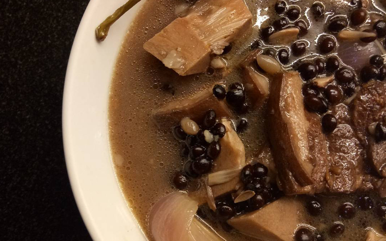
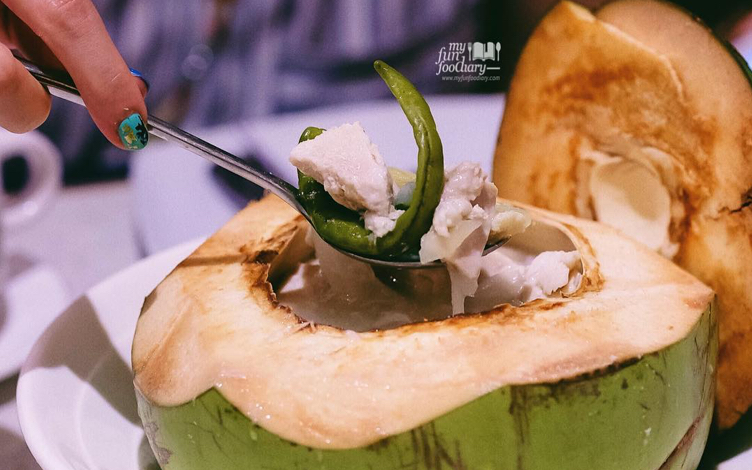
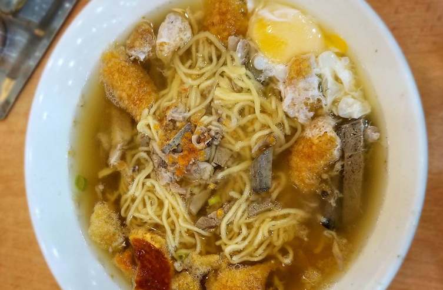
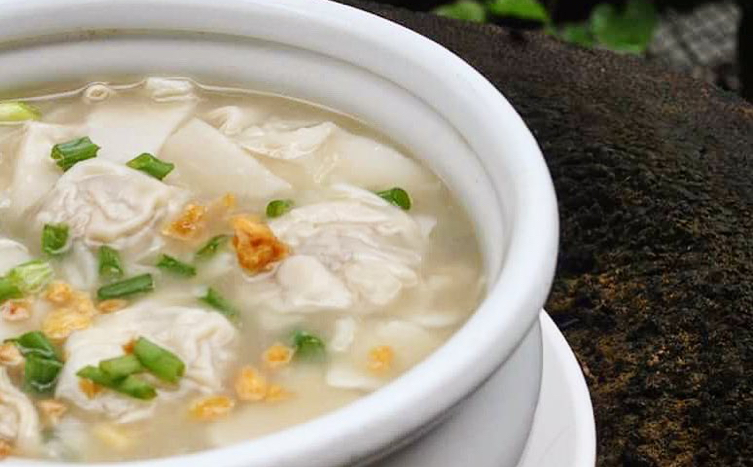
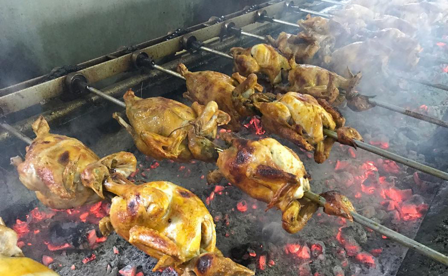
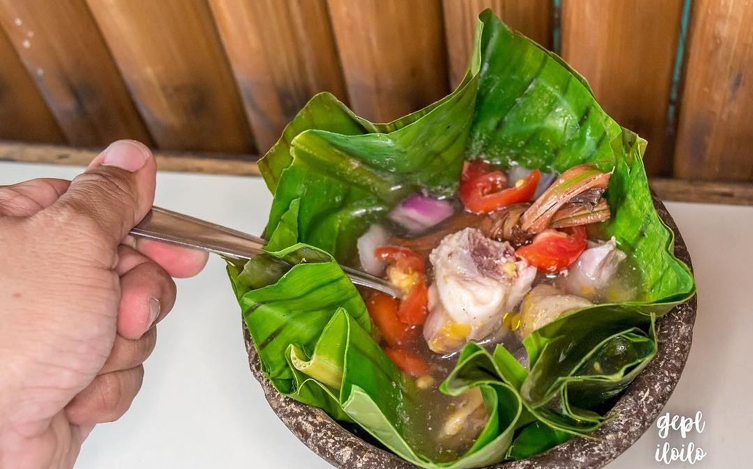
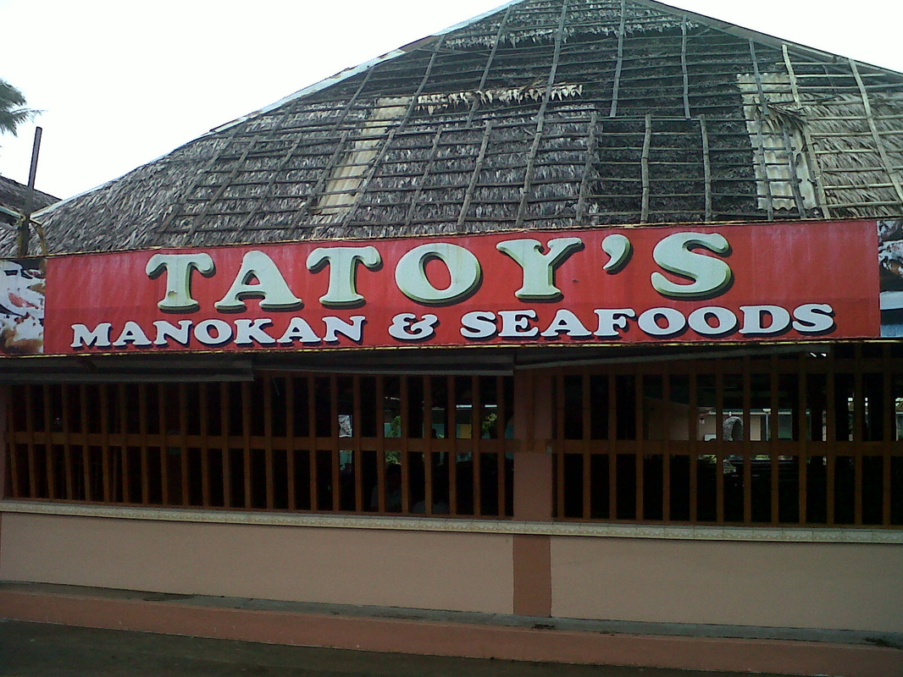

Iloilo Itinerary:
Ultimate Travel Guide
Iloilo is hometown to the grandmother of Abi of Team Our Awesome Planet. So expect a local’s perspective as her friends and relatives tour her around the town.

Discover the City of Love–beyond it’s famed Dinagyang Festival, century-old churches, majestic mansions, and unspoiled countryside–through its exotic delicacies.
RECOMMENDED FOODS
The best part? Food in Iloilo is really cheap, so even on a quick trip, you can go right ahead and binge to your heart's content—and even bring some treats home to your family and friends.
- The original La Paz Batchoy
- Pancit Molo
- Bisayang Lechon Manok
- Tinu-om
- KBL
-
KBL is on the menu of many local establishments, but you may want to try it at Breakthrough, Iloilo’s must-visit seafood restaurant that has branches around the city, so you can also enjoy fresh crabs, prawns, and oysters with your meal. If you want to dine beachside, hit the main branch at Villa.

- Chicken Binakol
Binakol is an Ilonggo specialty often likened to tinola, but with a twist: the use of coconut juice as base, with slivers of coconut flesh added to the recipe. This makes the soup unusually sweet instead of savory, yet rich and flavorful. Like the tinu-om, native chicken and vegetables figure in this light-tasting meal flavored with lemongrass and sometimes ginger. Fun fact: What sets it apart is that it’s cooked in bamboo tubes.

This steaming bowl of savory noodle soup was supposedly made of meat parts vendors weren’t able to sell that day. This explains why it contains a hodgepodge of ingredients, like bits of pork liver, pork intestines, thin beef slices, and bone marrow, all cooked in a robust pork and beef broth then garnished with egg, crushed chicharon, scallions, fried garlic, and even bagoong (guinamos in Hiligaynon).

The other half of its name is not as straightforward, however; contrary to what you'd expect, you won’t find “pancit” noodles in this dish. Instead, ground pork dumplings in wonton wrappers and shredded chicken swim in a hot bowl of clear yet rich and flavorful chicken broth seasoned with fried garlic, spring onions, and black pepper.

Beyond the chicken inasal that you can try anywhere these days (Mang Inasal came from Iloilo, after all), the chicken dish that will complete your Iloilo food trip is bisayang lechon manok, or charcoal-roasted native chicken. Tatoy’s Manokan makes the best version. You’ll gain a greater appreciation of free-range chicken, which is leaner than your usual poultry, after a bite of this tasty local specialty. Marinated in vinegar and calamansi then stuffed with lemongrass and sampalok leaves, this simple but satisfying delicacy is best paired with garlic rice.

Tinu-om is another iteration of native chicken that Iloilo is known for. This Cabatuan signature consists of boiled native chicken seasoned with onions, tomatoes, and lemongrass then wrapped in banana leaves, hence the name, which in the native dialect means “balot.” It’s served in tummy-warming broth with a mouthwatering aroma that balikbayan Ilonggos always crave upon landing home.

RESTAURANTS
- Tatoy's Manokan and Seafoods
An automatic inclusion in every “Where to Eat in Iloilo” listicle articles is Tatoy’s Manokan and Seafood where they cook and serve a medley of sumptuous Ilonggo native cuisines.
